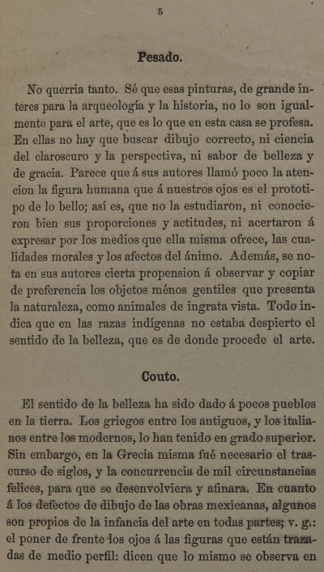

|
 |
Pesado No querria tanto. Sé que esas pinturas, de grande interés para la arqueología y la historia, no lo son igualmente para el arte, que es lo que en esta casa se profesa. En ellas no hay que buscar dibujo correcto, ni ciencia del claroscuro y la perspectiva, ni sabor de belleza y de gracia. Parece que á sus autores llamó poco la atencion la figura humana que á nuestros ojos es el prototipo de lo bello; así es, que no la estudiaron, ni conocieron bien sus proporciones y actitudes, ni acertaron á expresar, por los medios que ella misma ofrece, las cualidades morales y los afectos del ánimo. Además, se nota en sus autores cierta propension á observar y copiar de preferencia los objetos ménos gentiles que presenta la naturaleza, como animales de ingrata vista. Todo indica que en las razas indígenas no estaba despierto el sentido de la belleza, que es de donde procede el arte. Couto El sentido de la belleza ha sido dado á pocos pueblos en la tierra. Los griegos entre los antiguos, y los italianos entre los modernos, lo han tenido en grado superior. Sin embargo, en la Grecia misma fué necesario el transcurso de siglos, y la concurrencia de mil circunstancias felices, para que se desenvolviera y afinara. En cuanto á los defectos de dibujo de las obras mexicanas, algunos son propios de la infancia del arte en todas partes; v. g.: el poner de frente los ojos á las figuras que están trazadas de medio perfil; dicen que lo mismo se observa en
|
| 1 | 2 | 3 | 4 | 5 | 6 | 7 | ... | 105 | Siguiente |
|||
| Arriba |
||||||||||||